<!DOCTYPE html>
<html>
<head>
  <title>100 часов под землей | Отчет об одной экспедиции</title>
  
  <meta http-equiv='Content-Type' charset="utf-8">
  <meta name="robots" content="index, follow">
  <meta name="googlebot" content="index, follow">
  <meta name="viewport" content="width=device-width, initial-scale=1">
  <meta name="description" content='Экскурсии и квесты в старинных подземельях и в "спортивных" пещерах в Харькове. Фотоотчет об одной экспедиции'>
    
  <link rel="stylesheet" type="text/css" href="../../css/reset.css">
  <link rel="stylesheet" type="text/css" href="../../css/styles.css">
  <link rel="stylesheet" href="https://fonts.googleapis.com/css?family=Caveat:400,700|El+Messiri:400,500|Kurale|Pangolin&amp;subset=cyrillic">
  <link rel="shortcut icon" href="/img/favicon.png" type="image/png">
  
  <script type="text/javascript" src="../../js/jquery-1.2.6.js"></script>
  
</head>
  
<body>
  <div id='menu_appear' onclick='menuClick()'>></div>
  
  <div id='slider'>
    <div id='slideIn'>
    
      <div id='sl_left' class='slide' onmouseover='opacL_over()' onmouseout='opacL_out()'>
        <div id='sl_button_left'>&#171;</div>
      </div>
      
      <div id='sl_right' class='slide' onmouseover='opacR_over()' onmouseout='opacR_out()'>
        <div id='sl_button_right'>&#187;</div>
      </div>
      
      <div id='slideClose'>x</div>
      
    </div>
  </div>
  
  <div class='grid'>
    
    <div class='grid_header'>
      <div class='header'>
         
        <p>Подземный Харьков<br> Мир, которого Вы не знали</p>
        <div class='phones'>
          <div>Записаться на экскурсию</div>
          <div>
            <div id='vodafone' title='Vodafone'></div><div class='numbers' title='Vodafone'>(066)784-14-46</div>
          </div>
          <div>
            <div id='kievstar' title='Kievstar'></div><div class='numbers' title='Kievstar'>(067)375-18-65</div>
          </div>
        </div>
      </div>
    </div>
    
    <div id='menu' class= 'grid_left'> <!-- grid_left_show -->
      <div class='logo' id='logo'>
        <a href= '/'></a>
      </div>
      
      <div class='menu'>
        <ul>
          <li>
            <a href='/' id='to_main'>Главная</a>
          </li>
          <li>
            <a href='../../pages/ist_podz.html' id='to_ist_podz' title='Экскурсия в старинный подземный ход в центральной части города'>ИСТОРИЧЕСКИЕ ПОДЗЕМЕЛЬЯ</a>
          </li>
          <li>
            <a href='../../pages/cavex_quest.html' id='to_cavex_quest' title='Локация за пределами города'>КВЕСТ В ПЕЩЕРНЫХ ЛАБИРИНТАХ</a>
          </li>
          <!-- <li> -->
            <!-- <a href='pages/' id='booking'>Записаться</a> -->
          <!-- </li> -->
          <li>
            <a href='../../pages/briefing.html' id='to_briefing' title='Что одеть, что взять, чего ждать'>ИНСТРУКТАЖ</a>
          </li>
          <li>
            <a href='../../pages/safety_rules.html' id='to_safety_rules' title='Must have!'>ТЕХНИКА БЕЗОПАСНОСТИ</a>
          </li>
          <li>
            <a href='../../pages/articles.html' id='to_articles' title='Статьи и фотоотчеты' style='filter: drop-shadow(2px 5px 10px #FCDB7B);'>ЛЮБОЗНАТЕЛЬНЫМ</a>
           </li>
          <li>
            <a href='../../pages/questions.html' id='to_questions' title='Если есть, заходим...'>ВОПРОСЫ</a>
          </li>
        </ul>
      </div>
    </div>
    
    <div class='grid_content'>
      <div class='content_backgr'>
        <div id='content_backgr0'></div>
        <div id='content_backgr1'></div>
        <div id='content_backgr2'></div>
      </div>
      <div class='content'>
        <div id='100_2013' class='article'>
          <br>
          <p>Алексей Лях</p>
            
          <h1>100 часов 2013</h1>

          <p>Итак, в катакомбы съездили, от-100-часовились, пора же что-то и написать.</p>
          <p>Сразу оговорюсь: при написании данного отчета, автор, т.е. я, позволил себе некоторые, не влияющие на истину, художественные неточности в хронологической последовательности нижеизложенных событий.</p>
          <p>Как ни странно, первая более-менее внятая инфа о предстоящем мероприятии появилась от лица, в нем участвовать не собиравшегося:</p>

          <blockquote><i>
            Среда, 2 января 2013, 21:19 +02:00 от Stella <jili_sin@mail.ru>:</br></br>

            <b>Информация по 4-х дневке:</b></br>
            
            Оргвзнос: 140 грн.- полный срок, это транспорт, газ, продукты, вода. Алкоголь по желанию (магазин не близко), закуска приветствуется. 2 дня — 90 грн.</br>
            Не забывайте ложки, кружки и миски. В палатке, вероятно, жить будет комфортнее. Район сухой, воды нет.</br>
            В подземном базовом лагере более 45 человек, в том числе Полтава, Харьков, Санкт-Петербург, Николаев, Новый Орлеан.
            В программе топосъемка, разведка, учебные мероприятия, а так же дружеское общение в неограниченных количествах.</br>
            Отправление 04.01.2013 в 9.30 от клуба (Старобазарный пер. 5), не опаздывать!
          </i></blockquote>

          <p>В общем все ясно, главное кружки не забыть, а то «чай» наливать не во что будет.</p>
          <p>О билетах позаботились почти заранее (слава богу, что хоть верхние боковушки достались), сели в поезд и, без каких либо событий, заслуживающих фотодокументирования, проспали (подобрав по пути двух полтавских UPRT) до одесского вокзала.</p>
          <p>Ну здравствуй, Одесса-мама!</p>
          <p>Дотопали до указанного в приведенной цитате адреса (там действительно оказался гор-тур-клуб, в котором с недавних пор размещается одесский спелео-клуб «Поиск»), встретились с одесситами, и представителями остальных вышеперечисленных городов. Погрузились в специально нанятый по такому случаю автобус, и вскоре, минут через 60, высадились возле входа в каменоломни.</p>
          <p>Кстати в автобусе я понял, что насчет Нового Орлеана никто не шутил. Американец знал буквально несколько русских слов, и с моим знанием буквально нескольких слов английских, взаимно-понятной беседы не получилось. Жидкость же разрушающую языковые барьеры, доставать было пока рано. Но, как выяснилось, наши полтавские диггеры знают английский намного лучше всех нас вместе взятых (программисты как-никак), и в их лице Джошуа нашел довольно интересных собеседников.</p>
          <p>Так, о чем-бишь-я…</p>
          <p>ага, высадились: и забросились:</p>
          <figure class='init'>
            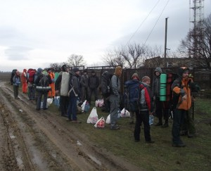
            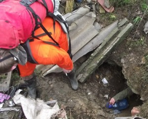
          </figure>
          </br>

          <p>Эх…! Тут бы под-на-при-выдумывать чего-нибудь такого что б Ух!… Но повествование ведется в формате отчета, так что будем по существу.</p>
          <p>За невзрачной дырой в неприметной, засыпанной мусором впадине близ села Ильинка, нам открылись легендарные одесские катакомбы. После нескольких метров на четвереньках уже можно встать в полный рост, взвалить рюкзак на плечи и, чиркая им по временами низковатому потолку, пробираться к подземному базовому лагерю, ПБЛу. После небольшой неразберихи, причиной которой были поиски места под подземным солнцем (желательно просторнее и комфортнее), команда ДП частично расположилась в уютном тупичке, в котором наши полтавчане уже успели совершить генеральную уборку, сделав его вполне пригодным для жизни. Еще трое харьковчан разместились в другой части выработки (поближе к общественной кухне).</p>
          <figure class='init'>
            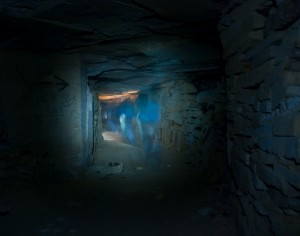
            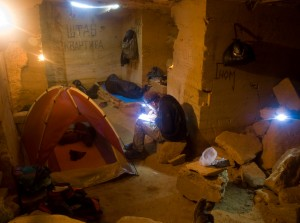
          </figure>
          </br>

          <p>Организацию подземного быта, по традиции, взяла на себя принимающая сторона. Автор этих строк, оправдывая свое прозвище (Lentyaj), вызвался первым дежурить старшим помошником главного повара. Увы бессменный шеф-повар и завхоз всех катакомбных экспедиций Кир Борисыч, на этот раз отсутствовал, его заменял Витя Васильев. Недостаток опыта сказался на первом же ужине, гречневой каши на всех не хватило. Пришлось доваривать макароны. Витя в тот вечер, мужественно поужинал последним, лишь после того как убедился что накормлены все. На самом же деле народу оказалось так много, что общественный котел просто не вмещал необходимого количества еды.</p>
          <p>Во время дежурства не обошлось и без курьезов, см. фото слева: «Ты хочешь нас всех отравить?!» (кто был там, тот поймет :)</p>
          <figure class='init'>
            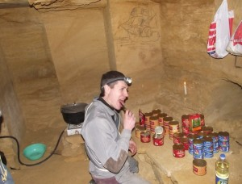
            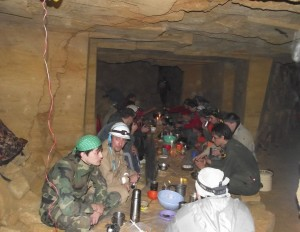
          </figure>
          </br>

          <p>Но, кроме приятного времяпрепровождения и уничтожения продовольственных запасов, перед участниками экспедиции стояла серьезная задача – разведка и топосъемка (картографирование) весьма обширного участка подземных выработок. Организаторы, правда, никого выполнением этой задачи особо и не напрягали, все и так знают зачем приехали.</p>
          <p>И, практически все Дети Подземелья, в первый же день ринулись в бой (чего, правда, не скажешь об остальных днях). Дима Жихарев, пан Фурсов, товарищ Dzin (Андрей Долгополов), и diMgo Lee (Дима Личкатый), примкнув к группам опытных картографов отправились изучать неведомое.</p>
          <p>Полтавчанам, Игорь Грек поручил ответственейший участок работ – картографирование базы, за что Кипер с Калашом с энтузиазмом и принялись. В процессе работы Женю (Кипера) вдруг перестал устраивать уровень детализации доступный в общепринятом тысячном масштабе, и они с Калашом (в миру Николай) приняли волевое решение снимать в масштабе 500:1, За что были удостоены похвалы и получили благословление и далее выполнять свою миссию. Вот процесс редактирования и результат их кропотливого труда в карандашно-векторном формате:</p>
          <figure class='init'>
            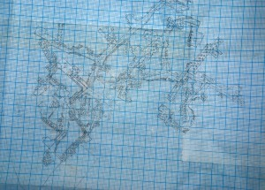
            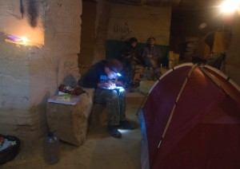
          </figure>
          </br>

          <p>После окончания трудового времени суток ознаменованного ужином (когда проведешь под землей некоторое время, понятия дня и ночи становятся все более условными), каждый проводит время так как ему нравится. Многие собираются в галерее возле кухни (теплее, светлее, закуска опять таки рядом) и под рюмку-другую чая, да мелодичные гитарные напевы, осуществляют один из заявленных в самом начале пунктов программы «дружеское общение в неограниченных количествах».</p>
          <figure class='init'>
            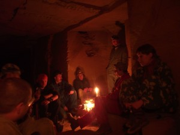
            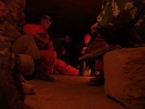
          </figure>
          </br>

          <p>Некоторое разнообразие, своим присутствием, внес американский товарищ. Кое кто счел своим патриотическим долгом на практике доказать утверждение что граждане Америки, в отличии от нас, пить не умеют. В процессе доказывания Джошуа от собутыльников не отставал и наутро, что вполне закономерно, появился в поле зрения только после обеда, впрочем, как и все остальные участники дружеской попойки. Так что выше упомянутое утверждение оказалось верным для всех наций, похмельному синдрому пофигу на каком языке ты разговариваешь.</p>
          <p>Кому посидеть, а кому погулять, решила часть харьковчан и, взяв запас карбида и батареек (мало ли чего), отправились на прогулку к дальним рубежам намеченного для обследования в этой экспедиции района (как выяснилось позже, так далеко никто топосъемить и не собирался).</p>
          <figure class='init'>
            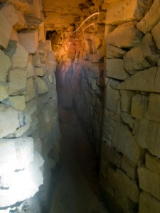
            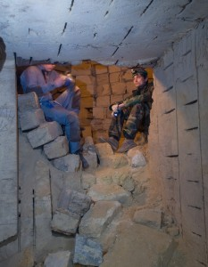
          </figure>
          </br>

          <p>К слову о запасах света и «мало ли чего». Несведущему человеку заблудиться в катакомбах, нефик делать. Профи ориентируются там исключительно по памяти, плюс знание общей системы построения выработок. Как им удается удерживать в голове сотни отличительных особенностей сотен перекрестков, одному Аиду известно, на компас они смотрят лишь иногда и мельком. Карта? Какая карта? Ну а простым смертным вроде нас, приходится на каждом ответвлении рисовать указывающие символы, желательно придумать свой уникальный автограф, т.к. таких как мы по катакомбам шарахается много. Мы использовали знак премудрого DZina с указывающей стрелкой (в нижней части фото):</p>
          <figure class='init'>
            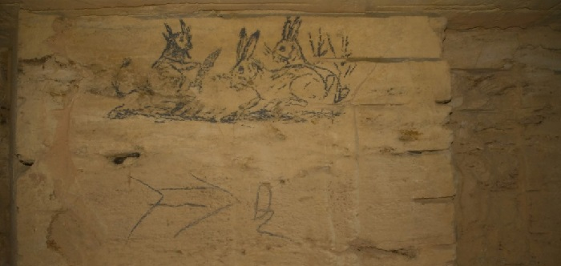
          </figure>

          <p>Кролики, с соблазняющим их морковкой, кроличьим ушасто-рогатым Люцифером (такова моя интерпретация данного полотна), в кадре просто за компанию.</p>
          <p>Прогулка неожиданно увенчалась маленьким успехом. Наша слабо-профессиональная, но дружная команда случайно наткнулась на вход в относительно новую шахту «Октябрьская», которую долго и безуспешно искал Денис – верховный предводитель еще одного одесского спелеоклуба «Мория» (да «поисковцы» в Одессе не одни, много катакомб, много и клубов).</p>
          <figure class='init'>
            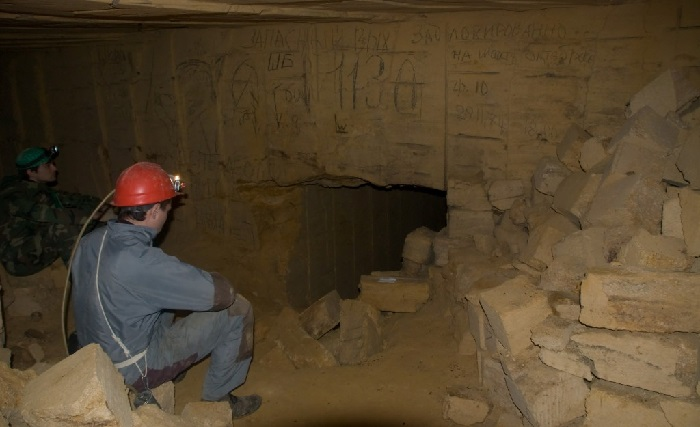
          </figure>
          </br>

          <p>Разумеется, на серьезное открытие эта находка не тянет, судя по настенным росписям там уже побывали десятки туристов и, судя по надписям сделанным еще шахтерами «спелеолохи не пройдут» (почему то шахтеры спелеологов очень не любят), некоторые посещения осуществлялись еще во времена разработки шахты. Но для участников данной экспедиции это было находкой. Кстати, настенные рисунки и надписи в каменоломнях, это вообще отдельный разговор, они заслуживают написания не то что отдельного отчета, а отдельной книги (и наверняка она уже написана, а и возможно не одна), но я отвлекся.</p>
          <p>Зашли, осмотрелись, вернулись в ПБЛ, собрали небольшую группу энтузиастов и «ворвались» на новую территорию. Если подключить чуточку воображения, можно почувствовать себя реальным первооткрывателем. А там нас действительно ждало много интересного. Например, сама шахта ёлочного строения (своими глазами я таких раньше не видел), относительно свежие следы пребывания шахтеров:</p>
          <figure class='init'>
            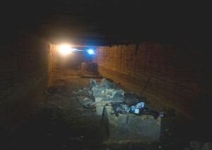
            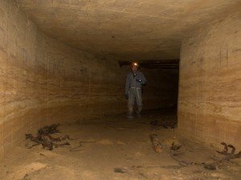
          </figure>
          </br>

          <p>Оставленные шахтерами домашние животные:</p>
          <figure class='init'>
            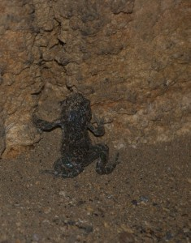
            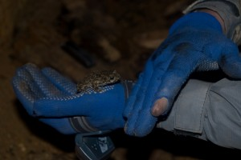
          </figure>
          </br>

          <p>И еще… еще… еще…</p>
          <figure class='init'>
            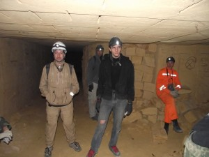
            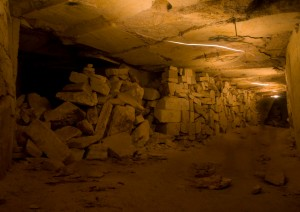
          </figure>
          </br>

          <figure class='init'>
            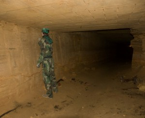
            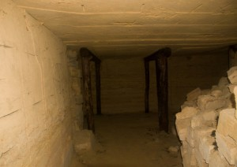
          </figure>
          </br>

          <p>Но…! Что бы попасть в новый КМАЗ (начиная с 50-х годов шахты разрабатывались т.н. камнерезными машинами Заступайло КМАЗ, штреки вырезанные такой машиной, также называют КМАЗами), пришлось пройти реально стремный участок:</p>
          <figure class='init'>
            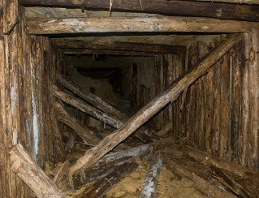
            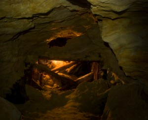
          </figure>
          </br>

          <p>Хоть и стремно, но интересно. Прошли все, сначала туда, а потом и обратно. В ПБЛ вернулись живыми, здоровыми и преисполненными чувства выполненного долга. Самое главное что было соблюдено основное правило подземных путешественников – количество вернувшихся с прогулки всегда должно быть не меньше количества ушедших.</p>
          <figure class='init'>
            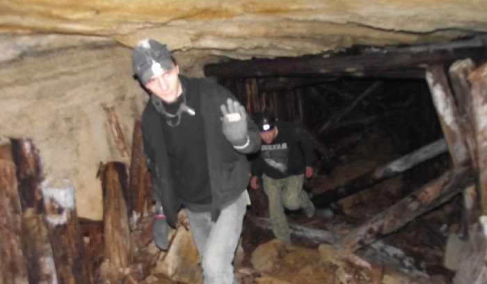
          </figure>
          </br>

          <p>Прогулки прогулками, а об отдыхе тоже забывать нельзя. Хотя… даже если забудешь, организм об этом все равно напомнит.</p>
          <figure class='init'>
            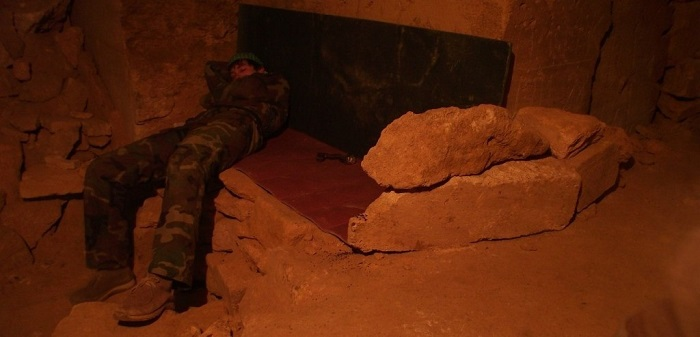
          </figure>
          </br>

          <p>Примерно в таком ключе (это я не о последнем фото, а в общем) и прошла сточасовка. Четыре подземных «дня» позади, пора собирать монатки и на выход. Чемодан, пардон рюкзак, вокзал, Харьков.</p>
          <p>Кстати, во время подземных скитаний кто-то нашел реликтовый инструмент – пилу, которой орудовали шахтеры, выпиливая камень, до появления КМАЗов. Разумеется, в обнимку с раритетом, счел необходимым сфотографироваться практически каждый:</p>
          <figure class='init'>
            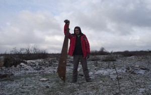
            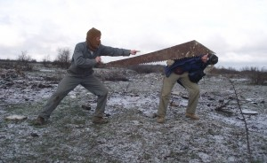
          </figure>
          </br>
          
          <figure class='init'>
            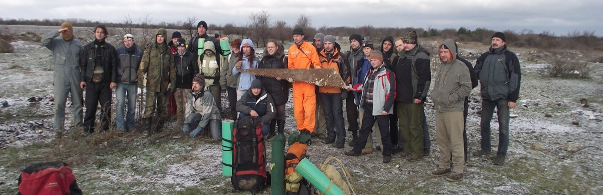
          </figure>
          </br>


          <p>У меня подобных фоток еще десятка с два, кому надо пишите</p>
          <p>Приехали в Одессу часов за пять до поезда, побродили по берегу…</p>
          <figure class='init'>
            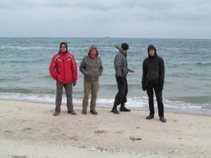
            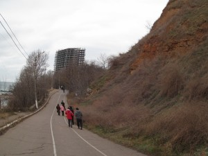
          </figure>
          </br>

          <p>(пользоваться случаем окунуться в море, почему-то никто не стал)</p>
          <p>… не удержались от соблазна проверить попадавшиеся по дороге дыры…</p>
          <figure class='init'>
            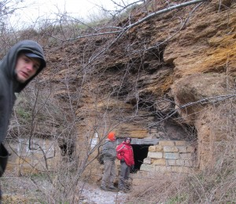
            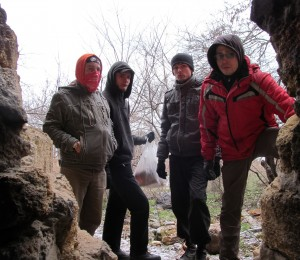
          </figure>
          </br>

          <p>… скоротали время в туристическом клубе, в компании местного мохнатого обитателя, который, как и большинство туристов, тоже любит залезть повыше, устроиться поудобнее, и полакать пиво …</p>
          <figure class='init'>
            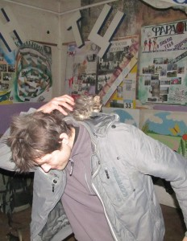
            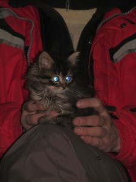
            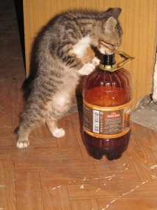
          </figure>
          </br>

          <p>… и наконец… дождавшись поезда, сели в него, и поехали по домам.</p></br>

          <p>Да, чуть не забыл:</br>
          С нами же был товарищ из США, который как это принято у них, сделал прощальное групповое фото. Попытки с третьей у него это почти получилось, не очень правда (недостаток опыта фотомоделей дал о себе знать), но прыгнули все. Правда-правда.</p>
          <p>Раз. Два. Три. Jump!</p>
          <figure class='init'>
            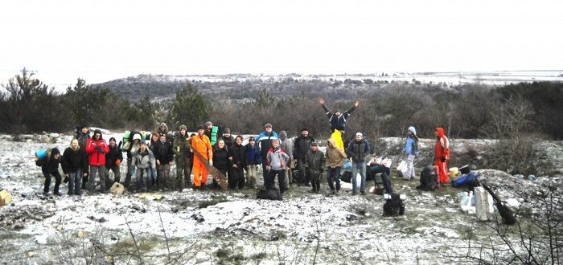
          </figure>
          </br>

          <p>Не то!  Попробуем еще раз:</p>
          <figure class='init'>
            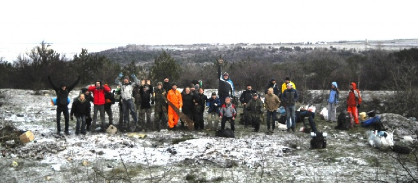
          </figure>
          </br>

          <p>Опять не успели? Ну да Бог с ним, хватит :)</p>
          <p>До новых встреч!</p>
        </div>
      </div>
    </div>
    
    <div class='grid_footer'>
        
    </div>
  
  </div>
  
  <script type='text/javascript' src="../../js/configuration.js"></script>
  
</body>
</html>
